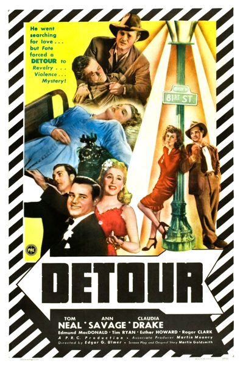

Detour
Starring: Tom Neal, Ann Savage, Esther Howard
Director: Edgar G. Ulmer
Writer: Martin Mooney
Detour is a 1945 American independent film noir directed by Edgar G. Ulmer and starring Tom Neal and Ann Savage. The screenplay was adapted by Martin Goldsmith and an uncredited Martin Mooney from Goldsmith's 1939 novel of the same title, and released by the Producers Releasing Corporation, one of the so-called Poverty Row film studios in mid-20th-century Hollywood.
Watch Online: Internet Archive
Trivia
- Based on Detour (1939 novel by Martin M. Goldsmith).
- Even so, it still had one of the highest profit margins, if not the highest, of any film noir listed in the National Film Registry.
- Billy Halop was tested for the role of Al Roberts, was selected for the part, but was replaced by Tom Neal just three days before filming began.
Filming Locations
- Camera days 14." Moreover, Ann Savage was contracted to Producers Releasing Corporation (PRC) for the production of Detour for three six-day weeks, and she later said the film was shot in four six-day weeks, with an additional four days of location work in the desert at Lancaster, California.
Previous Showings
2 Runs • 2 Festivals
All runs on record (2):
- March 22 - 23, 2003Film Noir and Pre-Codew/ The Asphalt Jungle
- October 8 - 9, 2016Vienna and the Moviesw/ The Strange Woman